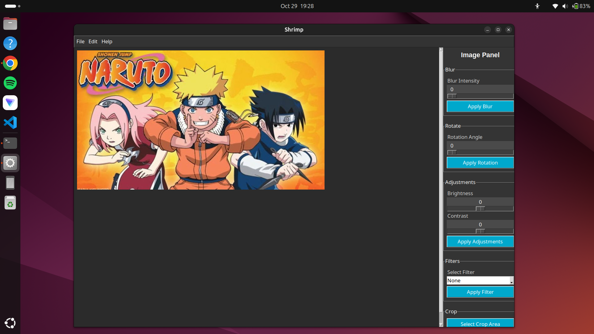

As at october 20 i started learning computer vision with the opencv library and after following a series of tutorials on youtube i decided to create a project that will require image processing to test what i have learned in opencv so far. So i came up with the ideal to create an image editor as a Desktop Application.
The above image is a screenshot of my image editor in action, the project is called shrimp meaning smart high resolution image manipulation program. check out the github repo
Python, opencv, tkinter, numpy.
The project uses tkinter for it's user interface and it uses opencv for image manipulation.